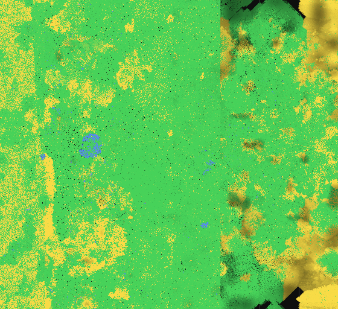

Machine evolution without a fitness function. A region is a 64 KB soup where code and data share one address space and every byte is a legal instruction. Nothing is scored: an organism persists by copying itself before its memory is reclaimed. Energy enters only as light, every instruction is paid from a reserve, and anything can eat or infect its neighbours. Organisms travel between regions and across the network cable between two home GPU rigs. Up to the fourth start the two rigs shared one world of 27.8 million regions. Since the fifth start every processor and every graphics card of the rigs runs a band of land of its own, seven bands in a ring of 286,720 regions, and the light of a band is the electricity its device draws.
This site is the lab's record: every experiment from its founders to its stop, the machines minute by minute, and a journal of what was changed, found and decided.
A new start under rules 7 - the machine is the universe. Every processor and every graphics card is a world of its own, seven of them joined in a ring, and the light of each is the electricity its device really draws. There is no day and no year. Signals are sometimes read wrong, and an organism can store energy in its own body.
This world stands still: none of its seven nodes is running. Rig A's three nodes were stopped cleanly and have stood still since ; rig B's four nodes were stopped cleanly and have stood still since . The journal's entry of Nov 13 13:35 UTC: “The fifth start is stopped cleanly and kept; a test of a pi oracle runs on the five cards”. The numbers here are those of each band's last round.
Organisms
125M
Inhabited regions
286K
Organisms that eat
18.9%
Ran for
6.2 h
Standing still for
28.6 h
Power the devices drew at the stop
752 W
of 1,056 W at full power
The seven bands of the world
band
started from
round
draws
organisms
inhabited regions
can eat
of other clans
one round takes
its numbers are from
rig A processor
a grazer
505
76 of 82 W
18,349,877
37,865 of 37,888
32%
2,123,167
68 s
stopped cleanly,
rig A 4090
an explorer
592
153 of 258 W
36,687,225
75,490 of 75,776
23%
9,521,472
56 s
stopped cleanly,
rig A 4080
a traveller
609
156 of 211 W
21,865,475
33,241 of 33,280
8%
421,343
50 s
stopped cleanly,
rig B processor
a grazer
577
164 of 174 W
19,303,587
39,922 of 39,936
4%
3,371,555
59 s
stopped cleanly,
rig B 3060a
an explorer
275
84 of 107 W
11,454,463
33,204 of 33,280
18%
2,299,016
71 s
stopped cleanly,
rig B 3060b
a traveller
279
92 of 111 W
12,214,138
33,235 of 33,280
18%
695,757
71 s
stopped cleanly,
rig B 3060c
a grazer
265
27 of 113 W
5,186,651
33,278 of 33,280
50%
2,593,464
36 s
stopped cleanly,
all seven
752 of 1,056 W
125,061,416
286,235 of 286,720
19%

The world at Nov 13 13:22 UTC: one pixel per region, brighter where more live. The seven bands lie side by side, from rig A processor on the left to rig B 3060c on the right, where the land meets its left edge again; the thin lines are the borders between the bands. Shown: columns 0 to 559, rows 0 to 511 of a world of 560 by 512 regions.
plants only
plants that also eat
eaters only
neither
Organisms
alive in each band, over time
Table
time
rig A processor
rig A 4090
rig A 4080
rig B processor
rig B 3060a
rig B 3060b
rig B 3060c
Nov 12 16:38 UTC
2.99M
Nov 12 16:49 UTC
13.2M
Nov 12 16:49 UTC
4.44M
Nov 12 16:50 UTC
4.04M
Nov 12 17:00 UTC
5.62M
Nov 12 17:01 UTC
6.83M
Nov 12 17:19 UTC
11.8M
Nov 12 17:38 UTC
11.5M
Nov 12 17:44 UTC
14.9M
Nov 13 09:00 UTC
13.4M
Nov 13 09:03 UTC
10.3M
Nov 13 09:30 UTC
14.7M
Nov 13 09:33 UTC
30.4M
Nov 13 09:59 UTC
15.9M
Nov 13 10:03 UTC
31.5M
Nov 13 10:29 UTC
16.3M
Nov 13 10:32 UTC
32.4M
Nov 13 10:59 UTC
16.6M
Nov 13 11:02 UTC
32.9M
Nov 13 11:29 UTC
16.9M
Nov 13 11:31 UTC
17.7M
Nov 13 11:33 UTC
6.12M
Nov 13 11:35 UTC
5.10M
Nov 13 12:00 UTC
34.4M
Nov 13 12:02 UTC
20.1M
Nov 13 12:04 UTC
8.25M
Nov 13 12:28 UTC
17.5M
Nov 13 12:31 UTC
35.1M
Nov 13 12:32 UTC
8.31M
Nov 13 12:34 UTC
8.09M
Nov 13 13:00 UTC
35.8M
Nov 13 13:01 UTC
17.9M
Nov 13 13:03 UTC
9.95M
Nov 13 13:28 UTC
18.2M
Nov 13 13:30 UTC
36.7M
Nov 13 13:31 UTC
9.76M
Nov 13 13:33 UTC
12.2M
Nov 13 13:34 UTC
5.19M
Organisms in the whole world
all seven bands together, wherever each had been read within three minutes
Table
time
the whole world
Nov 12 16:50 UTC
45.9M
Nov 12 16:50 UTC
Nov 12 17:03 UTC
66.4M
Nov 12 17:03 UTC
Nov 13 11:32 UTC
107M
Nov 13 11:32 UTC
Nov 13 12:02 UTC
110M
Nov 13 12:02 UTC
Nov 13 12:31 UTC
117M
Nov 13 12:31 UTC
Nov 13 13:01 UTC
120M
Nov 13 13:01 UTC
Nov 13 13:30 UTC
126M
Nov 13 13:31 UTC
132M
Power drawn
watts each band's device drew when its round ended: the light of the band
Publishing again, after one build held back since 02:02 UTCsun-5 · the check before publishing
note
Publishing held back: 7 problems on cluster.html, journal.html, methods/index.html and moresun-5 · the check before publishing
stop
The fifth start is stopped cleanly and kept; a test of a pi oracle runs on the five cardssun-5 · rig A processor round 505, rig A 4090 round 592, rig A 4080 round 609, rig B processor round 577, rig B 3060a round 275, rig B 3060b round 279, rig B 3060c round 265 · commit 0481f04 · RUNTIME
deploy
All seven bands run again, with a night that comes from the machinesun-5 · rig A processor round 383, rig A 4090 round 450, rig A 4080 round 455, rig B processor round 489, rig B 3060a round 185, rig B 3060b round 178, rig B 3060c round 180 · commit 0481f04 · RUNTIME
recovery
rig B 3060a: the node runs again, round 185sun-5 · rig B 3060a round 185 · the stall alarm
recovery
rig B 3060b: the node runs again, round 179sun-5 · rig B 3060b round 179 · the stall alarm